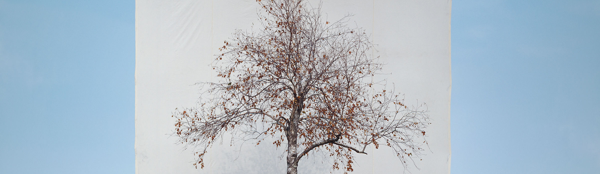

Tree #1
이명호 / LEEMYOUNGHO / 李明豪 / photography
Tree #1_종이에 잉크_155×130cm_2006
나무를 잘 보여주고 싶었다.
흰 천을 나무 뒤에 드리움으로써 자연에 묻힌 나무는 제 모습을 드러낸다.
내가 하는 일이라곤 캔버스에 나무를 그리는 대신
나무 뒤에 캔버스를 드리우는 일 뿐이지만 예술 행위의 본래 뜻도 여기에 있다.
해가 지면 불을 켜고 해가 나면 불을 끄는 일, 내 어려서 꿈은 등대지기였는데
가장 단순하고도 말초적인 일이지만 동시에 아주 보람되고 내게 제일 알맞은 일이라 여겼다.
예술은 그 꿈의 다른 형태다.
세상의 한구석을 들추고 환기하는 일,
이성과 감성을 객관화해 관객에게 전달하는 것이 내게 예술이다.
이명호
Tree #1